Macroeconomics
Fiscal policy refers to government decisions about federal income (through taxation) and federal spending. Monetary policy refers to central bank activities that are directed toward influencing the quantity of money and credit in an economy. Both can be used to regulate economic activity on the national scale over time. Note that the fisical year on government budgets starts and ends on Oct. 1. That is, FY 2022 is the 1-year period ending on Oct. 1 2022. Then, we will add on other aspects of the economy such as employment, GDP, domestic and international supply chains, and imports & exports.
Fiscal Policy
[Hide]Federal Income & Spending: An Overview
In order to understand what the government does, we should look at the U.S.'s federal income and spending, in which the budget is planned out thoroughly every fiscal year. To create the budget plan, the president initiates budget negotiations by submitting a budget to Congress for the subsequent fisical year by February. It should have predictions for U.S. tax revenue and estimated budget requirements. Congress responds with spending appropriation bills that go to the president by June 30. If both houses do not pass the budget, the budget resolutions from previous years carry over. The House or Senate may also propose their budget resolutions independently of the White House (example).
Federal Spending Targets
- Discretionary Spending: Portion of the budget that is decided by Congresss each year through an appropriations process. (Military, Education, Health, Veteran's Benefits, Government, Housing & Community, Transportation, International Affairs, Foreign Aid/Loans, Energy & Environment, Labor, Science, Food & Agriculture)
- Mandatory Spending: All spending that does not take place through appropriations legislation. (Social Security, Unemployment, Labor, Medicare & Health (mainly), Education, Government, Food & Agriculture, Veteran's Benefits, Transportation, Housing & Community, Infrastructure )
- (Net) Interest on Debt: All interest payments the federal government makes on accumulated debt, minus interest income received by the government. Usually the net interest is a spending, not income.
- Taxes: Income tax, payroll tax, corporate tax, excise tax, tariffs on imports, estates tax.
- One-time Payments: Fines, etc.
Budget Deficits
Historical data on U.S. income and spending reveals that the government almost always spends more than it earns, i.e. has a deficit. The dollar amount of national debt is not as important as its debt-to-GDP ratio, since a bigger economy translates to more revenue for a government to pay off debts.
| FY 2021 | FY 2020 | FY 2019 | FY 2018 | FY 2017 | FY 2016 | FY 2015 | FY 2014 | FY 2013 | FY 2012 | FY 2011 | FY 2010 | FY 2009 | FY 2008 | FY 2007 | FY 2006 | FY 2005 | FY 2004 | FY 2003 | FY 2002 | FY 2001 | FY 2000 | FY 1999 | |
|---|---|---|---|---|---|---|---|---|---|---|---|---|---|---|---|---|---|---|---|---|---|---|---|
| GDP (at fiscal end) | $22.40T | $20.70T | $21.10T | $20.24T | $19.18T | $18.41T | $17.90T | $17.79T | $16.58T | $16.03T | $15.38T | $14.80T | $14.42T | $14.75T | $14.32T | $13.69T | $12.89T | $12.09T | $11.33T | $10.88T | $10.57T | $10.15T | $9.51T |
| Federal Income | $4.05T 18.1% |
$3.42T 16.3% |
$3.50T 16.3% |
$3.33T 16.5% |
$3.32T 17.3% |
$3.27T 17.8% |
$3.25T 18.2% |
$3.02T 17.5% |
$2.77T 16.7% |
$2.45T 15.3% |
$2.30T 15.0% |
$2.16T 14.6% |
$2.11T 14.6% |
$2.52T 20.2% |
$2.57T 17.9% |
$2.41T 17.6% |
$2.15T 16.7% |
$1.88T 15.6% |
$1.78T 15.7% |
$1.85T 17.0% |
$1.99T 18.8% |
$2.03T 20.0% |
$1.83T 19.2% |
| Federal Spending | $6.82T 30.5% |
$6.55T 31.3% |
$4.40T 21.0% |
$4.11T 20.3% |
$3.98T 20.8% |
$3.85T 20.9% |
$3.69T 20.6% |
$3.51T 20.3% |
$3.45T 20.8% |
$3.54T 22.1% |
$3.60T 23.4% |
$3.46T 23.4% |
$3.52T 24.4% |
$2.98T 20.2% |
$2.73T 19.1% |
$2.66T 19.4% |
$2.46T 19.2% |
$2.29T 19.0% |
$2.16T 19.1% |
$2.01T 18.5% |
$1.86T 17.6% |
$1.79T 17.6% |
$1.70T 17.9% |
| Deficit/Surplus | -$2.77T 12.4% |
-$3.13T 15.0% |
-$984B 4.6% |
-$779B 3.8% |
-$665B 3.5% |
-$585B 3.2% |
-$439B 2.45% |
-$485B 2.8% |
-$680B 5.5% |
-$1.09T 6.8% |
-$1.30T 8.5% |
-$1.29T 8.7% |
-$1.41T 9.8% |
-$459B 3.1% |
-$161B 1.1% |
-$248B 1.8% |
-$318B 2.5% |
-$412B 3.4% |
-$375B 3.3% |
-$158B 1.5% |
+$128B 1.2% |
+$236B 2.3% |
+$126B 1.3% |
| National Debt (at fiscal end) | $28.43T 125.2% |
$26.94T 130.1% |
$22.71T 107.6% |
$21.51T 106.3% |
$20.24T 105.5% |
$19.57T 106.3% |
$18.15T 101.4% |
$17.79T 103.2% |
$16.72T 100.8% |
$16.65T 105.3% |
$14.76T 96.0% |
$13.53T 91.4% |
$11.88T 82.4% |
$9.99T 67.6% |
$8.95T 62.5% |
$8.45T 61.8% |
$7.91T 61.3% |
$7.35T 60.8% |
$6.76T 59.7% |
$6.20T 57.0% |
$5.77T 54.6% |
$5.63T 55.5% |
$5.61T 58.9% |
| National Debt Added | $1.49T | $4.23T | $1.20T | $1.27T | $670B | $1.42T | $360B | $1.07T | $70B | $1.89T | $1.23T | $1.65T | $1.89T | $1.04T | $500B | $540B | $560B | $590B | $560B | $430B | $140B | $20B | $130B |
- Domestic Borrowing: The government sells Treasury bonds to the public and private investors to borrow money. This has the consequence of restricting the capital flowing in the economy, driving down private sector spending, known as the crowding out effect (this effect overlaps with monetary policy). It seems that the the debt sold to the public (both domestic and foreign) covers all, if not a significant portion, of the deficit.
- Foreign Borrowing: The government sells Treasury bonds to foreign governments, corporations, individuals to borrow money. This is preferred if domestic pockets are not deep enough to cover federal spending. This has the consequence of having to pay the debts back in the future.
- Debt Monetization (Printing Money): The central bank creates does a one-way transfer of money to the government, which simply "makes" new money. The government can also sell T-bonds to the central bank in the primary market, who can then resell the acquired bonds. This has the consequence of increasing the monetary supply which may lead to inflation.
- The ridiculous spike in Federal spending in 2020 and 2021 was due to coronavirus.
National Debt: How it Impacts Federal Spending
Whenever the government borrows money by selling bonds, it adds to its national debt. Increased spending on the economy implies a greater budget deficit, leading to more borrowing and higher national debt. We can think of the national debt as either of the equivalent definitions:
- It is the face value of the then-outstanding Treasury securities that have been issued by the Treasury and other federal agencies.
- It is the net accumulation of budget deficits.
| FY 2021 | FY 2020 | FY 2019 | FY 2018 | FY 2017 | FY 2016 | FY 2015 | FY 2014 | FY 2013 | FY 2012 | FY 2011 | FY 2010 | FY 2009 | FY 2008 | FY 2007 | FY 2006 | FY 2005 | FY 2004 | FY 2003 | FY 2002 | FY 2001 | FY 2000 | FY 1999 | |
|---|---|---|---|---|---|---|---|---|---|---|---|---|---|---|---|---|---|---|---|---|---|---|---|
| Debt Outstanding ($B) | 28,429 | 26,945 | 22,719 | 21,516 | 20,244 | 19,573 | 18,150 | 17,824 | 16,738 | 16,066 | 14,790 | 13,562 | 11,910 | 10,025 | 9,008 | 8,507 | 7,933 | 7,379 | 6,783 | 6,228 | 5,807 | 5,674 | 5,676 |
| Interest Paid ($B) | 562.4 | 522.8 | 574.6 | 523.0 | 458.5 | 432.6 | 402.4 | 430.8 | 415.7 | 359.8 | 454.4 | 414.0 | 383.1 | 451.2 | 430.0 | 405.9 | 352.4 | 321.6 | 318.1 | 332.5 | 359.5 | 362.0 | 353.5 |
| Interest Rate | 1.98% | 1.94% | 2.53% | 2.43% | 2.26% | 2.21% | 2.22% | 2.42% | 2.48% | 2.24% | 3.07% | 3.05% | 3.22% | 4.50% | 4.77% | 4.77% | 4.44% | 4.36% | 4.69% | 5.34% | 6.19% | 6.38% | 6.25% |
- Increase Income by increasing taxes
- Reduce Spending by cutting costs on projects
- Debt Restructuring: Countries would move their debt from the private sector to public sector that might be better handle the impact of a country's default. Bondholders can also agree to accept a reduced percentage of what they are owed, along with the maturity dates of bonds being extended.
- Monetization of Debt by printing more money, which may lead to dangerous levels of inflation.
- Outright Default which would be destructive and affect the credit-worthiness of the U.S.
National Debt: Domestic, Foreign, Intragovernmental Debt
We can break down national debt into three cateorgies:
- Domestic debt: Government (non-intragovernmental) accounts, mutual funds, depository institutions (banks, etc.), state & local governments, pension funds, insurance companies.
- Foriegn debt: Foreign countries, national governments, international investors.
- Intragovernmental Debt: This is for the Social Security Tax Fund. When the government collects payroll taxes (the main source of income for OASDI), it invests them into U.S. treasury securities. This is weird because one governmental entity is buying bonds from another governmental entity, both under the same umbrella. However, these intragovernmental bonds are special because they are only reserved for the trust funds, bought only with payroll taxes, and are not marketable. Thus, the OASDI fund is invested in T-bonds, isolated within the government, for a consistent return that is needed for social security benefits.
| FY 2021 | FY 2020 | FY 2019 | FY 2018 | FY 2017 | FY 2016 | FY 2015 | FY 2014 | FY 2013 | FY 2012 | FY 2011 | FY 2010 | FY 2009 | FY 2008 | FY 2007 | FY 2006 | FY 2005 | FY 2004 | FY 2003 | FY 2002 | FY 2001 | FY 2000 | FY 1999 | |
|---|---|---|---|---|---|---|---|---|---|---|---|---|---|---|---|---|---|---|---|---|---|---|---|
| Debt Outstanding ($B) | 28,429 | 26,945 | 22,719 | 21,516 | 20,244 | 19,573 | 18,150 | 17,824 | 16,738 | 16,066 | 14,790 | 13,562 | 11,910 | 10,025 | 9,008 | 8,507 | 7,933 | 7,379 | 6,783 | 6,228 | 5,807 | 5,674 | 5,676 |
| Domestic Debt | 14,713 | 13,950 | 9,885 | 9,535 | 8,371 | 8,017 | 7,017 | 6,716 | 6,323 | 5,793 | 5,215 | ||||||||||||
| Foreign Debt | 7,570 | 7,069 | 6,924 | 6,226 | 6,302 | 6,156 | 6,106 | 6,069 | 5,653 | 5,476 | 4,912 | ||||||||||||
| Intragovernmental | 6,146 | 5,926 | 5,910 | 5,755 | 5,571 | 5,400 | 5,027 | 5,039 | 4,762 | 4,797 | 4,663 | 4,539 | 4,358 | 4,216 | 3,958 | 3,663 | 3,331 | 3,072 | 2,859 | 2,675 | 2,468 | 2,269 | 2,020 |
Major Foreign Holders of Treasury Securities
| Nov 21 | Oct 21 | Sep 21 | Aug 21 | Jul 21 | Jun 21 | May 21 | Apr 21 | Mar 21 | Feb 21 | Jan 21 | Dec 20 | Nov 20 | |
|---|---|---|---|---|---|---|---|---|---|---|---|---|---|
| Japan | 1340.6 | 1320.4 | 1299.6 | 1319.7 | 1310.2 | 1279.7 | 1266.2 | 1276.8 | 1240.5 | 1258.0 | 1276.9 | 1251.3 | 1260.8 |
| China, Mainland | 1080.8 | 1065.4 | 1047.5 | 1047.0 | 1068.3 | 1061.8 | 1078.4 | 1096.1 | 1100.4 | 1104.2 | 1095.2 | 1072.3 | 1063.0 |
| United Kingdom | 621.6 | 579.8 | 566.4 | 568.9 | 540.1 | 533.6 | 467.6 | 431.8 | 443.2 | 459.4 | 438.7 | 440.6 | 420.5 |
| Luxembourg | 334.4 | 314.3 | 311.9 | 294.1 | 291.7 | 302.1 | 287.6 | 290.4 | 282.8 | 282.1 | 280.9 | 287.7 | 267.8 |
| Ireland | 331.3 | 324.3 | 309.5 | 326.3 | 319.6 | 322.7 | 304.9 | 307.0 | 309.8 | 316.0 | 313.6 | 318.1 | 314.2 |
| Switzerland | 292.4 | 290.1 | 294.7 | 292.7 | 296.4 | 302.0 | 264.8 | 260.9 | 254.7 | 257.7 | 254.0 | 255.5 | 253.3 |
| Cayman Islands | 265.8 | 270.2 | 265.0 | 261.5 | 261.9 | 260.1 | 229.4 | 226.4 | 215.2 | 216.0 | 216.8 | 222.9 | 222.9 |
| Brazil | 248.8 | 247.7 | 249.0 | 248.9 | 248.5 | 249.1 | 251.8 | 255.3 | 255.5 | 259.0 | 260.4 | 258.3 | 262.2 |
| Taiwan | 248.4 | 242.4 | 239.4 | 237.2 | 242.2 | 239.3 | 236.3 | 234.0 | 231.5 | 234.5 | 239.6 | 235.4 | 222.3 |
| Hong Kong | 235.0 | 233.4 | 229.5 | 219.5 | 227.2 | 219.2 | 224.1 | 215.9 | 227.0 | 225.0 | 223.9 | 224.1 | 223.8 |
| France | 228.2 | 239.7 | 242.0 | 238.1 | 235.9 | 226.7 | 108.8 | 107.2 | 114.4 | 108.7 | 121.5 | 111.3 | 132.4 |
| Belgium | 224.9 | 225.8 | 220.9 | 227.7 | 220.5 | 228.5 | 236.4 | 234.8 | 235.8 | 236.7 | 248.2 | 253.5 | 240.5 |
| India | 205.2 | 210.7 | 218.4 | 217.0 | 219.2 | 220.2 | 215.8 | 208.7 | 200.0 | 204.4 | 211.6 | 216.2 | 220.2 |
| Canada | 197.4 | 200.3 | 167.1 | 169.2 | 166.8 | 167.8 | 121.1 | 116.1 | 106.0 | 112.7 | 126.6 | 119.9 | 127.4 |
| Singapore | 190.2 | 188.5 | 189.3 | 191.5 | 192.6 | 188.0 | 176.3 | 171.1 | 170.2 | 161.4 | 164.3 | 168.1 | 163.8 |
| Korea | 133.4 | 125.4 | 130.1 | 129.0 | 126.1 | 130.9 | 123.2 | 120.3 | 122.9 | 125.7 | 125.2 | 130.9 | 122.8 |
| Saudi Arabia | 115.0 | 116.5 | 124.3 | 124.1 | 128.1 | 127.6 | 127.3 | 130.3 | 130.8 | 132.9 | 135.1 | 136.4 | 137.6 |
| Norway | 100.2 | 105.0 | 120.8 | 119.9 | 119.1 | 115.8 | 113.5 | 109.2 | 94.3 | 97.5 | 91.4 | 87.5 | 89.0 |
| Germany | 82.2 | 83.8 | 83.6 | 82.4 | 80.5 | 83.3 | 77.1 | 77.8 | 77.6 | 73.5 | 74.8 | 75.4 | 73.0 |
| Bermuda | 72.0 | 70.9 | 72.3 | 70.2 | 67.6 | 68.0 | 66.3 | 67.1 | 66.3 | 67.1 | 68.2 | 72.6 | 74.0 |
- Japan and China are the biggest creditors to the U.S. The low and negative bond yields in Japan make U.S. securities more attractive.
- China's large holdings is justified through its rapidly expanding economy.
Debt Ceilings
The debt ceiling is a legislative limit on the amount of national debt that can be incurred by the U.S. treasury, limiting how much money the federal government must pay on the debt they already borrowed. It applies to the gross debt, which includes debt in the hands of the public and in intra-government accounts. If the U.S. national debt levels bump up against the ceiling, the Treasury Department must resort to other "extraordinary" measures to pay government obligations and expenditures until the ceiling is raised again.
In 1917, the debt ceiling was created during World War 1 to make the federal government fiscally responsible. Since the 1960s, the debt ceiling has been raised 76 times whenever the U.S. has approached that limit. There are debates on whether this ceiling actually keeps the government responsible, since it's been raised so many times. But if it hit the ceiling, the United States would not be able to cover its deficit since domestic and foreign income become choked off, leaving the U.S. with the option of debt monetization or other extraordinary measures.
Historical debt ceiling levels are recorded below. Note that these figures are unadjusted for the time value of money, such as interest and inflation.
| Aug 93 | Mar 96 | Jun 02 | Mar 06 | Jun 08 | Oct 08 | Feb 09 | Feb 10 | Jan 12 | Feb 13 | Feb 14 | Mar 17 | Sep 17 | Mar 19 | Jul 21 | Oct 21 | Dec 21 |
|---|---|---|---|---|---|---|---|---|---|---|---|---|---|---|---|---|
| 4,900 | 5,500 | 6,400 | 8,965 | 10,615 | 11,315 | 12,104 | 14,294 | 16,394 | Suspd. | Suspd. | 19,847 | Suspd. | 22,030 | 28,500 | 28,900 | 31,400 |
- 1995 Debt Ceiling Crisis:
- 2011 Debt Ceiling Crisis:
- 2013 Debt Ceiling Crisis:
- 2021 Debt Ceiling Crisis:
Federal Spending: A Closer Look
We use statistics from 2021. Mandatory progams include:
- Income Security ($1.6T): Disability assistance, food and nutrition assistance, supplemental security income (income for disabled), tax credits, unemployment compensation, housing assitance
- Social Security ($1.1T) is the commonly used term for the OASDI program, which provides benefits for three broad categories of individuals: retirees, disabled, and survivors, along with other beneficiaries such as spouses, divorced, orphans, widows, etc. The average monthly Social Security benefit for December 2019 was $1,382, with 65 million individuals receiving benefits as of 2020. They are funded primarily through payroll taxes.
- Healthcare ($797B), such as Medicaid provides health insurance for low-income individuals.
- Medicare ($697B) primarily provides health insurance for the elderly and for some disabled younger individuals.
- Veterans Benefits ($234B): Income security for veterans and healthcare assistance.
- Agriculture ($50B): Agricultural Research & Services, Farm Income Stabilization
- International Affairs ($47B): Foreign Aid, Poverty, Disease Prevention & Control, Diplomacy programs, foreign military aid, United Nations programs, Food
- Defense ($755B): Power Projections (sea & air power), munitions (maintenance & procurement of ammunition inventory), nuclear deterrence, missile defense, space systems, cyberspace operations, overseas contingency operations (funds available for unexpected warfare abroad).
- Transportation ($155B): Road improvements and repairs, air traffic control, railroad & infrastructure investments.
- Education ($263B): K-12 education grants, school choice programs, disability & special education programs, lunch assistance, No Child Left Behind Program (offering provisions to disadvantaged students), IDEA Special Education State Grants (for education of disabled), child nutrition programs, higher education
- Administration of Justice ($72B): Federal Law Enforcement, Litigative, Judicial Activities, Criminal Justice Assistance, Correctional Activities
- General Science, Space, Technology ($35.6B): Space Flight, research, general science & basic research
Monetary Policy
[Hide]
Money essentially serves three roles:
Commodity-backed money, or representative money, is a medium of exchange with little to no instrinsic value, but whose ultimate value is guaranteed by a promise that it could always be converted into valuable goods on demand. The most famous example of this is with gold. For example, if there was a supply of USD 1 trillion worth of gold coins in the U.S. economy, the Fed can collect the USD 1 trillion's worth of gold, keep it in its reserves, and replace them with representative money which would now circulate. U.S. banks issued paper bills, which promised to exchange their notes for gold and silver coins on demand determined by a bill-to-gold ratio (rate). The major appeal for representative money was that it was not influenced by inflation—governments were only able to print enough money for the amount of gold they held in their vaults.
As the economy grew even more, gold became scare with respect to the population and the increasing monetary supply. Rapidly growing economies couldn't always mine enough to back their currency supply requirements. The need for gold to give money value is extremely inefficient, especially when its value is really created by people's perceptions.
This is when the government introduced fiat money, which is not even backed by any commodity. Rather, its value arises entirely from supply and demand and people's faith of its worth (it is generally accepted as a means of payment). This means that the "promise to pay" for commodity-backed money was replaced with the promise to accept that currency.
However, because fiat money can no longer be converted into gold and is not directly tied to the amount of gold a government stores, fiat money is at risk from inflation. There is technically nothing stopping the government from printing too much money.
This financial market in which interbank lending occurs in the U.S. is called the federal funds market, and the interest rate the lending bank can charge is referred to as the federal funds rate (FFR). There are two variations of this rate:
The three rates can be summarized in the following diagram: 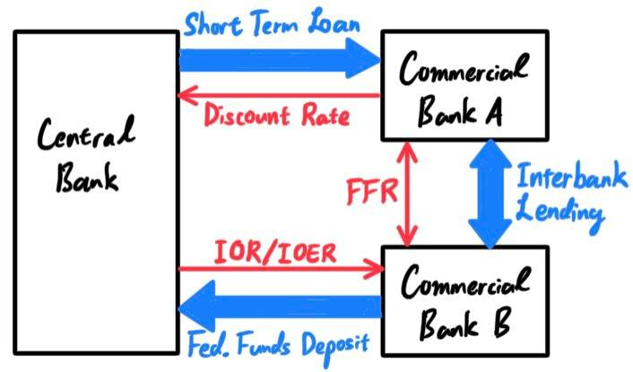 There are simple relationships between these rates. If I am a commercial bank that needs money to satisfy my overnight reserve requirements, then I can either borrow from the Fed (with the discount rate) or other commercial banks (with FFR). Since borrowing from the Fed with the fixed discount rate is always an option, other commercial banks should naturally have an FFR lower than the discount ($\text{EFFR} < \text{Discount}$).
If I am a commercial bank that has extra money, then I can either loan it to the Fed at the IOER rate or other commercial banks at the FFR. The FFR should naturally be higher than the IOER ($\text{IOER} < \text{EFFR}$). Combining these two gets \[\text{IOER} < \text{EFFR} < \text{Discount}\] Since the Fed has direct control over IOER and Discount, it has control over the FFR, which lies in between the two. (Question: IOER has been actually greater than FFR consistently in the past 10 years. Why?)
The Fed can finally conduct open market operations (OMO), which means to buy and sell government securities in the open market. Modifying Reserve Requirements
Modifying Reserve Requirements
The simplest thing the Fed can do is change the reserve requirements that banks must keep in the central bank. Changing Discount Rates
Changing Discount Rates
The Fed can also change the discount rate that banks pay on short-term loans from the Federal Reserve bank. Changing IOR/IOER Rates
Changing IOR/IOER Rates
It can change the IOR/IOER. It's really just the IOER since the IOR rate applies only to mandatory reserves, while the IOER is on excess reserves.
Suppose that the government prints USD 10B and credits an additional USD 90B (i.e. credits loans by selling bonds) to banks and other depository institutions. At first, it might seem like the economy just received a monetary influx of USD 100B, but that is actually a very small percentage of the actual money creation. Let us assume that the reserve requirement is 10% (that is, all depository institutions must have 10% of their deposits kept in the federal reserve).
This continues on in the form of a geometric series with a common ratio of 0.9 (1 minus the reserve ratio of 10%). After an infinite time, the total money supply converges 10 times USD 100B to become USD 1 trillion.
We also depict a visual below. For simplicity, we depict each cycle as going through a single bank numbered $1, 2, 3$, but for each cycle $\text{Bank }i$ represents all the banks scattered throughout the nation that receives and loans these deposits. 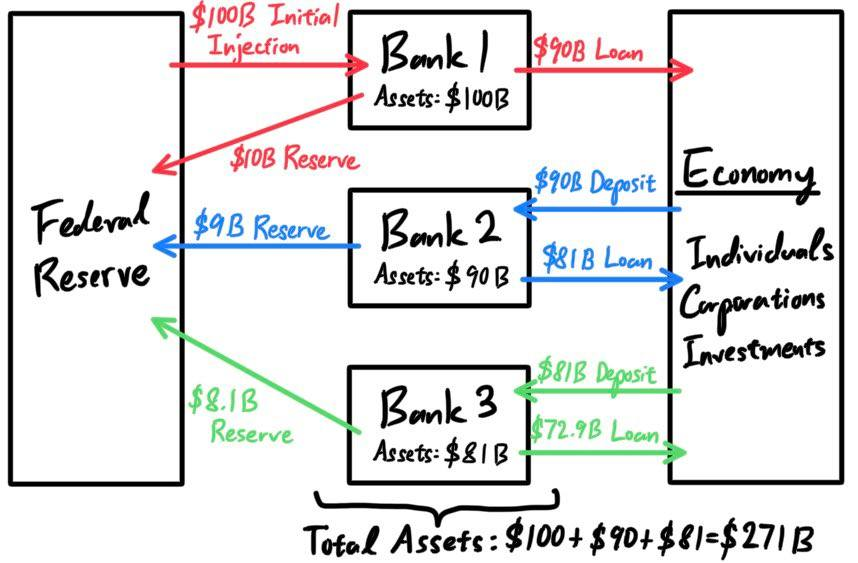 One subtle distinction that we must mention is that in the ideal case where banks loan out precisely 90% of their deposits and the economy deposits 100% of their savings, this multiplier is actually called the deposit multiplier. It is indeed the case that the reserve requirement is about 10%, but the M1/M2 supplies are not even close to 10 times the M0 supply. This is because of imperfections due to excess reserves, savings, and conversions to cash by consumers, the actual multiplier, called the money multiplier, is ultimately less. Borrowers do not spend all of the money received from bank loans. If they did, and if banks loaned out every possible dollar beyond the minimum reserve requirements, then the deposit multiplier and the money multiplier would be close to exactly equivalent.
- It is a medium of exchange, an asset that individuals use to trade for goods and services rather than for consumption.
- It is a store of value, having a means of holding purchasing power over time (which may decrease), which may be determined through its instrinsic value or face value.
- Intrinsic value of an object is its value or use in itself.
- Face value of an object is the value of what it represents.
- It is a unit of account, used to standardized rates and payments.
History of Money: Bartering → Commodity Money → Representative Money → Fiat Money
To understand the abstract role of money, it serves to learn about its history. From 3000 B.C. in Mesopotamia, before the development of a medium of exchange (1st role), people would barter to obtain the goods and services they needed. Two individuals, each possessing some goods the other wanted, would enter into an agreement to trade. However, this method was inefficient because:
- There were disagreements on the value of a certain good.
- Certain goods may not be easily divisible in value.
- Things were not transferable, i.e. easily carried over distances.
- widely desired because of its practicality (e.g. salt for food or beaver pelts for warmth) or beauty (e.g. gold or silver). That is, it has utility and value
- durable (also called indestructible), portable, and easily stored.
- This overlaps with the first requirement, but the money must be somewhat limited or controlled in its storage; no matter how valuable or desired a commodity is, it will be worthless if there is an endless supply of it.
- Tree leaves cannot be used as money since it is not widely desired (not practical nor beautiful).
- In the 17 and 18th centries, American colonists used beaver pelts and dried corn in transactions.
- Salt was used as commodity in the classic Mayan civilizations. Prior to industrialization, it was extremely expensive and labor-intensive to harvest the quantities of salt necessary for food preservation and seasoning.
- Cigarettes and gasoline were used as a form of commodity money in some parts of Europe in the immediate aftermath of World War 2.
- Gold and silver were beautiful precious metals that were minted into coins as commodity money. It met all the requirements. However,after the Spanish conquistadors brought back mountains of gold from the Americas, the supply of gold had massively jumped, leading to the decrease in value of the gold coins.
Commodity-backed money, or representative money, is a medium of exchange with little to no instrinsic value, but whose ultimate value is guaranteed by a promise that it could always be converted into valuable goods on demand. The most famous example of this is with gold. For example, if there was a supply of USD 1 trillion worth of gold coins in the U.S. economy, the Fed can collect the USD 1 trillion's worth of gold, keep it in its reserves, and replace them with representative money which would now circulate. U.S. banks issued paper bills, which promised to exchange their notes for gold and silver coins on demand determined by a bill-to-gold ratio (rate). The major appeal for representative money was that it was not influenced by inflation—governments were only able to print enough money for the amount of gold they held in their vaults.
As the economy grew even more, gold became scare with respect to the population and the increasing monetary supply. Rapidly growing economies couldn't always mine enough to back their currency supply requirements. The need for gold to give money value is extremely inefficient, especially when its value is really created by people's perceptions.
This is when the government introduced fiat money, which is not even backed by any commodity. Rather, its value arises entirely from supply and demand and people's faith of its worth (it is generally accepted as a means of payment). This means that the "promise to pay" for commodity-backed money was replaced with the promise to accept that currency.
However, because fiat money can no longer be converted into gold and is not directly tied to the amount of gold a government stores, fiat money is at risk from inflation. There is technically nothing stopping the government from printing too much money.
Monetary Supply: M0, M1, M2
The monetary supply refers to the amount of cash or currency circulating in an economy. There are different way to define this supply, with different systems in different countries. In the U.S.,
- The monetary base, or M0, is the total amount of money created by the central bank. This is a combination of
- the total currency circulating in the public (coin currency, physical paper)
- plus the currency that is physically held in the vaults of commercial banks
- plus the commercial banks' reserves held in the central bank
- The M1 covers M0 in addition to checkable bank deposits (checking accounts)and traveler's checks (but does not include savings accounts, bonds).
- The M2 covers M1 in addition to savings deposits, time deposits (e.g. CDs), and money market shares (e.g. funds).
| 2021 | 2020 | 2019 | 2018 | 2017 | 2016 | 2015 | |
|---|---|---|---|---|---|---|---|
| U.S. M0 | $6.4T | $5.2T | $3.4T | $3.4T | $3.85T | $3.5T | $3.84T |
| U.S. M1 | $20.6T | $17.8T | $4.0T | $3.8T | $3.6T | $3.3T | $3.1T |
| U.S. M2 | $21.6T | $19.1T | $15.3T | $14.4 | $13.9T | $13.2 | $12.3T |
| China M1 | $10.2T | ||||||
| China M2 | $37.5T | $33.6T |
Commercial & Central Banks: Reserve Requirements & Interest Rates
We describe the relationship between the central bank and financial institutions. Most financial institutions such as banks make money from interest they earn by lending out money to other clients. It is clear that the interest rate paid by the bank on the money they borrow is less than the rate charged on the money they lend. Therefore, the majority of the deposits are not held by the bank.
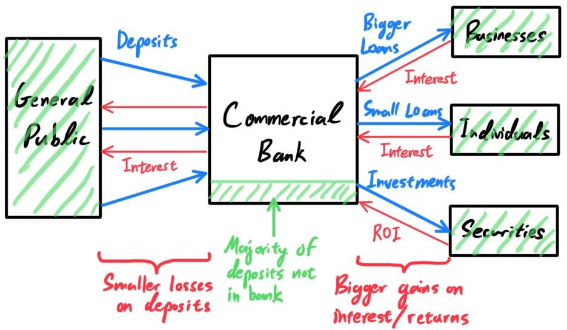
This can be risky since if a lot of people want to withdraw their money from the bank at once, the banks may not have enough liquidity to pay them back, leading to panic. In order to minimize the possibility of these bank runs, the Fed legally requires banks to have a required reserve ratio (the amount of funds that a bank holds in reserve to ensure that it is able to meet liabilities in case of sudden withdrawals), which have historicaly been between 0% and 10% of total deposits. These federal funds (the minimum amount required to have) are stored in the regional Federal Reserve banks (so the central bank acts as the banks' bank). The end-of-the-day balances in each bank's account, averaged over two-week reserve maintenance periods, are used to determine whether the bank meets its reserve requirements.
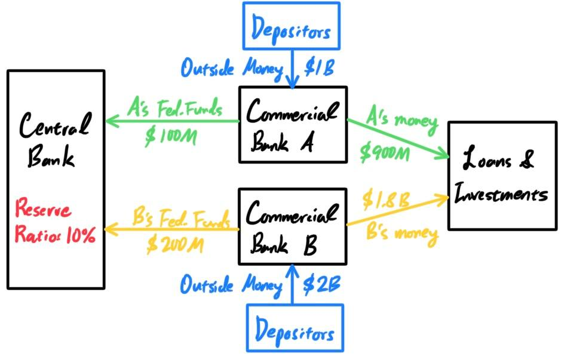
There is a dynamic relationship between the federal bank and the many commercial banks. They can lend money to each other, and depending on who lends who, different rates are charged. The two rates below are directly controlled by the Fed.
- The interest on (excess) reserves, IO(E)R, is the rate of interest that the central bank pays commercial banks on required reserves and excess reserves. Directly controlled by the Fed.
- The discount rate is the rate of interest that commercial banks pay the central bank. Directly controlled by the Fed.
This financial market in which interbank lending occurs in the U.S. is called the federal funds market, and the interest rate the lending bank can charge is referred to as the federal funds rate (FFR). There are two variations of this rate:
- The actual interest rate for a loan between two banks is determined through negotiations between them. The weighted average of this rate across all such transactions on a certain night is the federal funds effective rate (FFER).
- The federal funds target rate (FFTR) is a (usually quarter percent) range set by the FOMC (usually 8 times a year) as a guidepost, which they enforce by open market operations and adjustments in IOR/IOERs. The target rate is almost what is meant by the media referring to the Fed "changing interest rates." The actual FFR generally lies within the range of that target rate.
The three rates can be summarized in the following diagram: 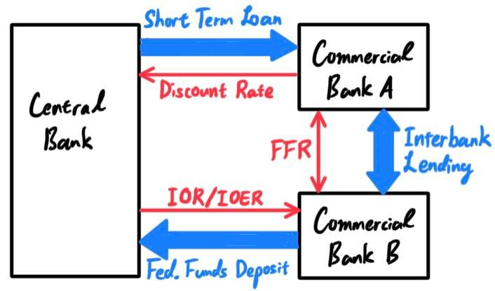 There are simple relationships between these rates. If I am a commercial bank that needs money to satisfy my overnight reserve requirements, then I can either borrow from the Fed (with the discount rate) or other commercial banks (with FFR). Since borrowing from the Fed with the fixed discount rate is always an option, other commercial banks should naturally have an FFR lower than the discount ($\text{EFFR} < \text{Discount}$).
If I am a commercial bank that has extra money, then I can either loan it to the Fed at the IOER rate or other commercial banks at the FFR. The FFR should naturally be higher than the IOER ($\text{IOER} < \text{EFFR}$). Combining these two gets \[\text{IOER} < \text{EFFR} < \text{Discount}\] Since the Fed has direct control over IOER and Discount, it has control over the FFR, which lies in between the two. (Question: IOER has been actually greater than FFR consistently in the past 10 years. Why?)
Monetary Policy: Ways to Inject/Withdraw Money and Change the FFR
Now, we describe how the Fed uses these policies to control the monetary supply. We can interpret some sum of money "being" or "flowing" in the economy if it is available to use by commercial banks to invest in other securities, i.e. not in the federal funds. Also note that increasing the money in the economy allows commercial banks to have more cash reserves on hand, which induces them to lend them out at lower rates, making loans easier to get in the overnight market and thus decreasing the FFR. Keep in mind that
\begin{align*}
\text{More money in economy} & \iff \text{FFR decreases} \\
\text{Less money in economy} & \iff \text{FFR increases}
\end{align*}
Open Market OperationsThe Fed can finally conduct open market operations (OMO), which means to buy and sell government securities in the open market.
- Buying government bonds (with possibly newly printed money) from a group of banks (or other entities in the market) → banks get more money by selling the bonds → more money supply in commercial banks & economy ↔ FFR decreases
- Selling government bonds to banks (or other entities in the market) → banks lose money by buying the bonds → less money supply in commercial banks & economy ↔ FFR increases
The simplest thing the Fed can do is change the reserve requirements that banks must keep in the central bank.
- Lowering reserve requirements → Lower percentage of bank deposits must be in federal reserve → More money supply in commercial banks & economy ↔ FFR decreases
- Raising reserve requirements → Greater percentage of bank deposits must be in federal reserve → Less money supply in commercial banks & economy ↔ FFR increases
The Fed can also change the discount rate that banks pay on short-term loans from the Federal Reserve bank.
- Lowering discount rate → Easier for commercial banks to borrow from Fed → more money supply in commercial banks & economy ↔ FFR decreases
- Raising discount rate → Harder for commercial banks to borrow from Fed → less money supply in commercial banks & economy ↔ FFR increases
It can change the IOR/IOER. It's really just the IOER since the IOR rate applies only to mandatory reserves, while the IOER is on excess reserves.
- Lowering IOER rate → Banks prefer to lend funds out rather than keep it in Fed → more money supply in commercial banks & economy ↔ FFR decreases
- Raising IOER rate → Banks prefer to keep funds in Fed than lend to potentially risky borrower → less money supply in commercial banks & economy ↔ FFR increases
Money Multiplier Effect
Recall that the M0 monetary supply, or the monetary base, is the total amount of money that the Fed has injected into the U.S. economy. For this reason the monetary base is also called high-powered money. However, the M1 and M2 supplies usually is much larger than the M0. As of 2021, the M0 supply is USD 6.4T, while the M1 is USD 20.6T and M2 is 21.6T. Where did this extra money come from? The multiplier effect, which exists in the fractional reserve banking system, tells us that infusions of capital will have a broad snowball effect on various aspects of economic activity. That is, if the government injects a certain amount of money into the economy, it turns out that the money supply increases by multiple factors of what was put in.
Suppose that the government prints USD 10B and credits an additional USD 90B (i.e. credits loans by selling bonds) to banks and other depository institutions. At first, it might seem like the economy just received a monetary influx of USD 100B, but that is actually a very small percentage of the actual money creation. Let us assume that the reserve requirement is 10% (that is, all depository institutions must have 10% of their deposits kept in the federal reserve).
- The banks get USD 100B. With the 10% requirement, they must keep 10B in reserves and can lend out 90B in investments or loans, which goes into the hand of institutions and individuals. There is a total of 100B in money supply: 90B lent out and 10B in reserves.
- These institutions/individuals will deposit the 90B receivings in banks. The banks get USD 90B. With the 10% requirement, they must keep 9B in reserves and can lend out 81B in investments or loans, which goes into the hand of institutions and individuals. There is a total of 190B in money supply: 90+81=171B lent out and 10+9=19B in reserves.
- These institutions/individuals will deposit the 81B receivings in banks. The banks get USD 81B. With the 10% requirement, they must keep 8.1B in reserves and can lend out 72.9B in investments or loans, which goes into the hand of institutions and individuals. There is a total of 271B in money supply: 90+81+72.9=243.9B lent out and 10+9+8.1=27.1B in reserves.
- These institutions/individuals will deposit the 72.9B receivings in banks. The banks get 72.9B USD...
| Bank | Deposit Amount | Amount Lent Out | Money Supply | Reserves | Total Reserves |
|---|---|---|---|---|---|
| 1 | $100.00 | $90.00 | $100.00 | $10.00 | $10.00 |
| 2 | $90.00 | $81.00 | $190.00 | $9.00 | $19.00 |
| 3 | $81.00 | $72.90 | $271.00 | $8.10 | $27.10 |
| 4 | $72.90 | $65.61 | $343.90 | $7.29 | $34.39 |
| 5 | $65.61 | $59.05 | $409.51 | $6.56 | $40.95 |
| 6 | $59.05 | $53.14 | $468.56 | $5.90 | $46.86 |
| 7 | $53.14 | $47.83 | $521.70 | $5.31 | $52.17 |
| ... | ... | ... | ... | ... | ... |
We also depict a visual below. For simplicity, we depict each cycle as going through a single bank numbered $1, 2, 3$, but for each cycle $\text{Bank }i$ represents all the banks scattered throughout the nation that receives and loans these deposits. 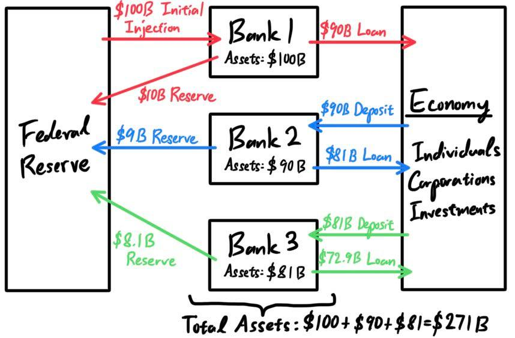 One subtle distinction that we must mention is that in the ideal case where banks loan out precisely 90% of their deposits and the economy deposits 100% of their savings, this multiplier is actually called the deposit multiplier. It is indeed the case that the reserve requirement is about 10%, but the M1/M2 supplies are not even close to 10 times the M0 supply. This is because of imperfections due to excess reserves, savings, and conversions to cash by consumers, the actual multiplier, called the money multiplier, is ultimately less. Borrowers do not spend all of the money received from bank loans. If they did, and if banks loaned out every possible dollar beyond the minimum reserve requirements, then the deposit multiplier and the money multiplier would be close to exactly equivalent.
Inflation
Inflation is the decline of purchasing power of a given currency over time. All else being the same, if the monetary supply increases in an economy, by supply and demand this leads to a decrease in value of bills and therefore leads to inflation (at least according to monetarists). Inflation is calculated with the Consumer Price Index (CPI), which is a measure of the average change over time in the prices paid by urban consumers for a market basket of consumer goods and serviecs, and the Wholesale Price Index (WPI), both gotten through various national surveys.
There are many reasons for inflation and the loss in currency value.
- The main cause is an increase in the supply of money (generally). When the Fed prints more money or buys back debt from the public, it injects money into the economy. A bigger supply of money reduces its demand, causing inflation.
- Following the Spanish conquest of the Aztec and Inca empires, massive amounts of gold and especially silver flowed into the Spanish and other European economies. Since the money supply had rapidly increased, the value of money fell, contributing to rapidly rising prices.
- The transition from representative money to fiat money removed the restrictive limit of physical gold in the printing of more money. Before, the physical limit of gold in the Fed's reserves kept the central bank under control in how much money it can print (since it can only print up to how much gold it can reedeem), being a strong deterrent for inflation. However, after the transition into fiat currency, inflation rates have generally risen.
- Demand Pull Inflation: TBD, required for understanding of sector inflation.
- Cost Push Inflation: TBD, required for understanding of sector inflation.
| 2021 | 2020 | 2019 | 2018 | 2017 | 2016 | 2015 | 2014 | 2013 | 2012 | 2011 | 2010 | 2009 | 2008 | 2007 | 2006 | 2005 | 2004 | 2003 | 2002 | 2001 | |
|---|---|---|---|---|---|---|---|---|---|---|---|---|---|---|---|---|---|---|---|---|---|
| CPI % Change | 4.70% | 1.23% | 1.76% | 2.49% | 2.13% | 1.26% | 0.12% | 1.62% | 1.46% | 2.07% | 3.16% | 1.64% | -0.36% | 3.84% | 2.85% | 3.23% | 3.39% | 2.66% | 2.28% | 1.58% | 2.85% |
| Food & Beverages | 3.83% | 3.33% | 1.84% | 1.41% | 0.88% | 0.35% | 1.80% | 2.32% | 1.41% | 2.54% | 3.58% | 0.79% | 1.87% | 5.38% | 3.90% | 2.35% | 2.43% | 3.38% | 2.15% | 1.82% | 3.11% |
| Housing | 3.29% | 2.19% | 2.89% | 2.88% | 2.97% | 2.48% | 2.08% | 2.58% | 2.08% | 1.65% | 1.32% | -0.37% | 0.37% | 3.18% | 3.16% | 3.80% | 3.26% | 2.57% | 2.52% | 2.22% | 4.00% |
| Apparel | 2.47% | -4.81% | -1.28% | 0.03% | -0.34% | 0.11% | -1.26% | 0.08% | 0.91% | 3.40% | 2.18% | -0.48% | 0.98% | -0.08% | -0.38% | -0.07% | -0.74% | -0.37% | -2.54% | -2.55% | -1.78% |
| Transportation | 14.56% | -4.16% | -0.28% | 4.51% | 3.42% | -2.10% | -7.81% | -0.68% | 0.03% | 2.34% | 9.81% | 7.89% | -8.33% | 5.88% | 2.11% | 4.00% | 6.63% | 3.52% | 3.07% | -0.90% | 0.60% |
| Medical Care | 1.23% | 4.11% | 2.83% | 1.97% | 2.51% | 3.79% | 2.63% | 2.39% | 2.46% | 3.66% | 3.04% | 3.41% | 3.17% | 3.71% | 4.42% | 4.01% | 4.22% | 4.39% | 4.02% | 4.71% | 4.60% |
Trade & Supply Chains
[Hide]Workforce & Employment
The economy of a country is dependent on its population, or more specifically, it's workforce. As a quick bird-eye-view reference, here are the nations with the higest populations in 2020, in millions.
| Country | Population | Country | Population |
|---|---|---|---|
| China | 1,439M | Turkey | 84M |
| India | 1,380M | Iran | 94M |
| United States | 331M | Germany | 84M |
| Indonesia | 274M | Thailand | 70M |
| Pakistan | 220M | United Kingdom | 68M |
| Brazil | 212M | France | 65M |
| Nigeria | 206M | Italy | 60M |
| Bangladesh | 164M | South Africa | 59M |
| Russia | 145M | South Korea | 51M |
| Mexico | 128M | Colombia | 51M |
| Japan | 126M | Spain | 47M |
| Philippines | 110M | Argentina | 45M |
| Egypt | 102M | Iraq | 40M |
| Vietnam | 97M | Poland | 38M |
Companies and organizations around the country can utilize the workforce to generate, distribute, and sell products. The unemployment rate is used as a measure of the underutilization of the labour supply. It represents the inability of the economy to generate employment for those persons who want to work but are not doing do, even though they are available for employment and actively seeking work. From the data below on the yearly unemployment rates of the U.S., it usually spikes up after an economic depression and gradually comes down.
| Year | Unemp. Rate | Year | Unemp. Rate |
|---|---|---|---|
| 1998 | 4.5% | 2010 | 9.6% |
| 1999 | 4.2% | 2011 | 8.9% |
| 2000 | 4.0% | 2012 | 8.1% |
| 2001 | 4.7% | 2013 | 7.4% |
| 2002 | 5.8% | 2014 | 6.2% |
| 2003 | 6.0% | 2015 | 5.3% |
| 2004 | 5.5% | 2016 | 4.9% |
| 2005 | 5.1% | 2017 | 4.4% |
| 2006 | 4.6% | 2018 | 3.9% |
| 2007 | 4.6% | 2019 | 3.7% |
| 2008 | 5.8% | 2020 | 8.1% |
| 2009 | 9.3% | 2021 | 5.3% |
Domestic Trade & Domestic Supply Chains
Domestic trade is the exchange of domestic goods within the boundaries of a country. It allows factors of production to reach the right places so that the economy of the country can grow. It can be divided into two categories:
- Wholesale trade is concerned with buying goods from manufacturers, dealders, or producers in large quantities and selling them in smaller quantities to other who may be retailers or even consumers. A wholesaler generally deals with one type of industry (e.g. machinery, textile, stationery).
- Retail trade is concerned with the sale of goods in small quantities to consumers. In some cases, manufacturers and wholesalers may also undertake retail distribution of goods to bypass the intermediary retailer for a higher profit margin. A retailer does not have to be from one industry and can trade in a variety of products.
- (Raw Material) Suppliers extract (minerals, oil) or harvest (e.g. livestock, farming, energy) some form of raw material, also known as primary commodity.
- Manufacturers take these raw materials and use labor and machinery to manufacture them into some product. It is often the case that a single manufacturer does not make the finished product (e.g. manufacturer of car doors), so the product made by one manufacturer can go to another manufacturer, which may use additional raw materials to add to that product.
- Distributors work closely with manufactuers to buy these products in bulk. They specialize in distributing over a large network and have large warehouses for storage. They may have some exclusive contract with the manufacturers and may be allocated based on some city or region.
- Wholesalers also buy these products in bulk (and store them in warehouses), but they have a closer relationship with the retailers, which they sell small quantities to. It is often the case that the distributor and the wholesaler is the same entity.
- Retailers take these finished products and sell them in locations that are easy to reach for consumers like us.
- Consumers are at the end of the chain, who buy the product for use throughout the nation.
When thinking of any business (whether it's a retailer, supplier, manufacturer, distributor, etc.), we can interpret it as a function that inputs some set of "things" and outputs "products" that have a higher value in which the company can sell for at a profit. However, the diversity in inputs and outputs make it quite hard to construct a universal model of a business. Generally, if you're running a business within a supply chain, and you must create some product, it's good to think about three types of inputs:
- Inventory are short-term assets that are direct inputs in the supply chain to produce whatever output. They are not reused. e.g. raw materials for manufacturing, finished products in storage waiting to be sold, land for home building to be sold.
- Property, Plant, Equipment (PPE) are long-term assets that are reused and depreciated over time. They aid in the efficient process of producing whatever output. e.g. machinery for manufacturing, trucks for delivery, warehouses for storage, office buildings, land (for office space).
- Labor which consists of any and all forms of work done by individuals, can come in many forms. A business can use internal labor (e.g. company employees & management, internal staff) or external labor (e.g. outsourcing, offshoring, consultants, lawyers, contractors, auditors). A company can hire a full-time lawyer as an internal employee, but many roles are being outsourced these days for increased specialization. The labor force has many jobs, e.g. manual labor, equipment operation, delivery, marketing, HR, management, etc.
Imports/Exports & International Supply Chains
A company within a domestic supply chain would find that it may have a limited number of options on where they can get the inputs (labor, PPE, or inventory) or can send the outputs. In fact, it may be cheaper for the company to look at international markets since
- the inputs may be cheaper to acquire, more so than the additional costs of oversight and transportation
- the outputs can be sold for higher profit, more so than the additional costs of oversight and transportation
- A2's POV: If the wood prices in country B are significantly lower (due to, say more forests in country B's geography), then A2 can choose to get its wood from B1 over A1, leading to higher profits when selling it to A3. Furthermore, if the demand for whatever A2 is making is much higher in country B, then A2 can choose to sell it to B3 (or possibly even B4) at a premium, also leading to higher profits.
- A3's POV: If there is plenty of cheap labor in country B, company A3 can import inputs from B2 at a cheaper price to sell to A4. If the demand for the product is higher in country B, then A3 can export it back out to sell them at a higher revenue over the transportation costs.
For example, England and Portugal have historically both benefited by specializing and trading according to their comparative advantages. Portugal has plentiful vineyards and can make wine at a low cost, while England is able to more cheaply manufacture cloth given its pastures are full of sheep. Each country would eventually recognize these facts and stop attempting to make the product that was more costly to generate domestically in favor of engaging in trade. Indeed, over time, England stopped producing wine, and Portugal stopped manufacturing cloth. Both countries saw that it was to their advantage to stop their efforts at producing these items at home and, instead, to trade with each other in order to acquire them.
There are two types of trade:
- An export is a product that is sold to the global market. It is divided into product/goods/merchandise exports and service exports. Any goods & services (products, materials, labor) that a company sends overseas to another nation in the supply chain is an export.
- An import is a product that is bought from the global market. It is divided into product/good/merchandise exports and service exports. Any goods & services that companies abroad send into the nation in the supply chain is an import.
Now we delve into some data, which may have small discrepancies based on the data source. We use the one from the ITC. [Show]
International Trade Policies
As international trade opens up the opportunity for specialization, and thus more efficient use of resources, it has the potential to maximize a country's capacity to produce and acquire goods. Furthering this point, the free trade theory states that there should be no restrictions on trade, and that supply and demand factors, operating on a global sale, will ensure that production happens efficiently. Protectionism says that regualation of international trade is important to ensure that markets function properly. Countries can impose policies to control trade. Let us use the same model of two countries $A$ and $B$, with their respective companies $A_1, A_2, \ldots$ and $B_1, B_2, \ldots$.
Say that country $A$ imposes an (import) tariff, in some contexts called an (import) duty, on a certain good from country $B$, which may be a fixed sum or a percentage. If company $A_j$ wants goods from any company $B_i$, then $A_j$ must pay a tax to the federal government of $A$. Note the effects:
- This can increase government revenue.
- This would discourage and limit the imports of this good (since the company $A_j$ wouldn't want to pay more for the same amount of goods), which can imporve the economics of producing that product domestically.
- This would raise prices for consumers, since the additional cost of importing leads to a subsequent increase in prices all the way through the supply chain.
- This can be used as political leverage against countries.
- This can lead to lower quality products due to reduced competition.
- Foreign companies importing to company $A$ may have an incentive to build factories and offices in country $A$.
In the visual, say that company $B_i$ wants to sell USD 1B worth of wood to $A_j$. Normally, the transaction would happen as shown in the top, with USD 1B profit for $B_i$ in exchange for some amount of wood. If country $A$ has a 10% tariff on wood imports, then after paying the USD 1B, company $A_j$ must pay an additional USD 100M to the government $A$. Therefore, if $A_j$ is still buying from $B_i$, it must pay USD 1.1B for the same amount of wood. 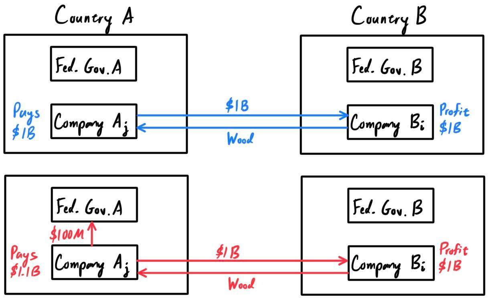 Say that a certain industry in country A is struggling due to international competition. This may be through lowered prices or cheaper labor, which makes the domestic business not profitable without the subsidy. For example, in the A1/A2/A3/A4 example above, if the B1 wood supplier has such cheap rates that every single manufacturer in country A is getting their goods from imports rather than A1, A1 will be struggling due to foreign competition. The government of country A can give company A1 a subsidy, which is some type of financial assistance.
It comes in many forms, such as a direct payment of funds to a business or industry, reduced tax rates, and price reductions for required goods/services that can be government supported. This allows needed items to be purchased below the current market rate, resulting in savings for the struggling companies. Note the effects:
- Industries can receive protection from external competition to protect domestic benefit.
- Reduced competition can lead to lower quality products.
Gross Domestic Product
The gross domestic product (GDP) is the total monetary or market value of all the finished goods and servies produced within a country's borders in a specific time period (usually a year). It is a broad measure of overall domestic production and a country's economic health. There are many way to calculate it.
The expenditure approach says that everything that the private sector (e.g. consumers and private firms) and the government spend within the borders of a particular country must add up to the total value of all finished goods and services produced over a certain period of time. The formula is \[\text{GDP} = \text{C} + \text{I} + \text{G} + (\text{X} - \text{M})\] where
- $C$ is consumer spending on goods and services. Consumers spending money to acquire goods and services, such as groceries and haircuts. It accounts for the majority of the U.S. GDP, more than 2/3, meaning that it is an essential part of GDP. A high confidence levels indicates that consumers are willing to spend, while a low confidence level reflects uncertainty about the future and an unwillingness to spend.
- $I$ is investor spending on business capital goods, i.e. capital expenditures on assets with useful lives of more than one year each, such as real estate, equipment, production facilities, and plants.
- $G$ is government spending on public goods and services, such as public equipment, infrastructure, and payroll (basically federal spending).
- $X$ is exports and $M$ is imports, and so $X - M$ is the net exports.
There are actually a couple forms of GDP:
- Nominal GDP is the raw value of GDP, unadjusted for inflation.
- Real GDP is the GDP adjusted for inflation, making it a more accurate indicator for economic growth. It is conventional to use this, which is also called GDP in constant USD.
- GDP per capita (nominal or real) is the GDP divided by the population, which produces the average output of an individual within a nation. This is used to normalize the GDP across population when comparing nations.
- GDP growth rate compare the year-over-year (or quarterly) change in a country's GDP to measure how fast its economy is growing.
| GDP (2020 USD) | 2006 | 2007 | 2008 | 2009 | 2010 | 2011 | 2012 | 2013 | 2014 | 2015 | 2016 | 2017 | 2018 | 2019 | 2020 |
|---|---|---|---|---|---|---|---|---|---|---|---|---|---|---|---|
| U.S. | $13,815B | $14,452B | $14,713B | $14,449B | $14,992B | $15,543B | $16,197B | $16,785B | $17,527B | $18,238B | $18,745B | $19,543B | $20,612B | $21,433B | $20,984B |
| China | $2,752B | $3,550B | $4,594B | $5,102B | $6,087B | $7,552B | $8,532B | $9,570B | $10,476B | $11,062B | $11,233B | $12,310B | $13,895B | $14,280B | $14,723B |
| Japan | $4,602B | $4,580B | $5,107B | $5,289B | $5,759B | $6,233B | $6,272B | $5,212B | $4,897B | $4,445B | $5,004B | $4,931B | $5,037B | $5,149B | $5,058B |
| Germany | $2,992B | $3,421B | $3,730B | $3,398B | $3,396B | $3,744B | $3,527B | $3,733B | $3,884B | $3,356B | $3,467B | $3,682B | $3,975B | $3,888B | $3,846B |
| U.K. | $2,717B | $3,106B | $2,939B | $2,426B | $2,491B | $2,675B | $2,719B | $2,803B | $3,087B | $2,957B | $2,723B | $2,699B | $2,901B | $2,879B | $2,764B |
| India | $940B | $1,217B | $1,199B | $1,342B | $1,676B | $1,823B | $1,828B | $1,857B | $2,039B | $2,104B | $2,295B | $2,651B | $2,701B | $2,871B | $2,660B |
| S. Korea | $1,053B | $1,173B | $1,047B | $944B | $1,144B | $1,253B | $1,278B | $1,371B | $1,484B | $1,466B | $1,500B | $1,624B | $1,725B | $1,651B | $1,638B |
| Russia | $990B | $1,300B | $1,661B | $1,223B | $1,525B | $2,046B | $2,208B | $2,292B | $2,059B | $1,363B | $1,277B | $1,574B | $1,657B | $1,687B | $1,483B |
Currency & Foreign Exchange
As we have mentioned in its history, currency is a medium of exchange for goods and services, issued by a government and generally accepted at its face value as a method of payment (even though fiat money has no instrisic value).
The federal government of many nations issue their own currency. This allows each nation to control their own monetary policy through increasing or restricting the supply of money within its national economy. If the entire world had one currency, the entity controlling the production and flow of that currency would have monetary power over the entire world. Having multiple federal banks would also not work, since there may be conflicts of interest.
About 180 national currencies are recognized by the United Nations, while another 66 countries either use the U.S. dollar or peg their currencies directly to the dollar.
- the United States has the US Dollar USD
- Canada has the Canadian Dollar (CAD)
- China has the Chinese Yuan (CNY or RMB)
- Japan as the Japanese Yen (JPY)
- Korea has the Korean Won (KRW)
- Switzerland has the Swiss Franc (CHF)
- the UK has the Great Britain Pound Sterling (GBP)
- Poland has the Polish Zloty (PLN)
- The EU nations, such as Austria, Belgium, Estonia, Finland, France, Germany, Greece, Ireland, Italy, Latvia, Luxembourg, Netherlands, Portugal, Spain, etc., have the euro (EUR).
But how are these exchange rates determined in the first place, and what factors cause them to fluctuate? Let there exist nations A and B with respective currencies AAA and BBB.
- If B has higher rate of inflation than A, then AAA/BBB would rise. We're really comparing the value of AAA to BBB by looking at their purchasing power of a basket of goods determined by the CPI.
- Adding on from above, any increase in the money supply of a nation will depreciate its value. It's common sense that as the money supply increases, its purchasing power will decrease due to inflation.
- If the federal government of B increases interest rates, then it offers lenders a higher return relative to other countries. Therefore, countries like A would want to convert their currencies into BBB to invest in B. A high demand for BBB's currency can cause the value of BBB to appreciate.
- A country that have a large public debt will suffer a depreciation of its currency. A large debt will eventually have to be serviced and paid off with cheaper real dollars in the future, which may happen through printing money (which increases money supply and causes inflation). Foreigners may also be scared off by large debts also due to a risk of national default on loans.
- A country that is politically stable and has a strong economic performance will draw foreign investors looking for safe, credit-worthy investments.
- For example, let B be a major exporter of oil to A, with the exchange rate $AAA/BBB = 1$. If a barrel of oil is 60 BBB, then (ignoring transportation & operational costs) a company in A could buy oil for 60 AAA, which would convert to the correct price of 60 BBB. Now, assume that the exchange rate is changed to $AAA/BBB = 1.2$. This means that a company in A can pay 50 AAA, which is worth 60 BBB, for a barrel of oil. This makes the import purchase cheaper for A. 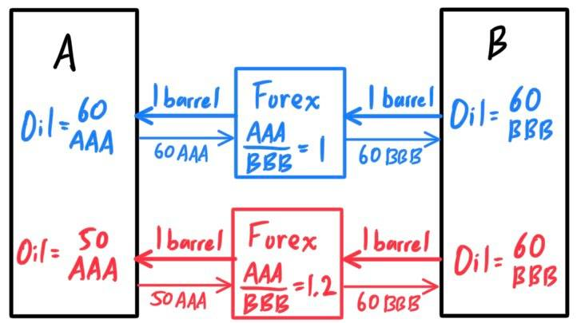
- Furthermore, if A is an exporter of, say timber, to B, with timber prices at 100 AAA per ton, then a company in B could originally buy the ton with 100 BBB. With the increased exchange rate, a company in B would have to pay 120 BBB (which translates to 100 AAA) to import a ton of timber from A. Therefore, B would have to increase their payment from 100 BBB to 120 BBB to get the same goods and services from A, which increases their expenditures on imports. 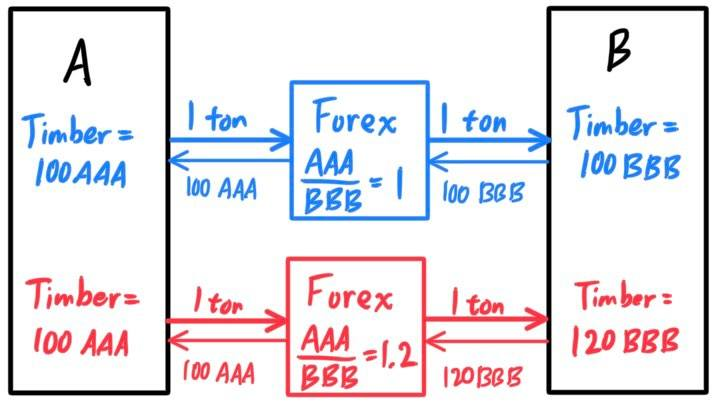
Many nations have their own currencies that vary in value depending on the overall strength of the economy and policies. However, a nation may peg its currency to that of another nation. A currency peg is a policy in which a national government sets a specific fixed exchange rate of its currency with a foreign currency (usually the USD or euro), done by actively controlling the value of the currency so that it rises and falls along with the dollar. Nation B might peg its currency to that of (usually a more developed) nation A to encourage trade between the two countries by reducing foreign exchange risk. This is especially important when profit margins for many businesses in B are low, so small shifts in exchange rates can eliminate profits and force firms to find new suppliers.
To maintain the dollar peg, a nation B's central bank must have a large foreign reserve. As a result, most of the countries that use a USD peg have significant exports to the United States. B's companies receive lots of dollar payments, which they exchange for local currency BBB with B's central bank to pay their workers and domestic suppleirs. B's federal government amasses its foreign reserve of US dollars this way. This fund is further grown by buying U.S. Treasuries to receive interest on their dollar holdings. 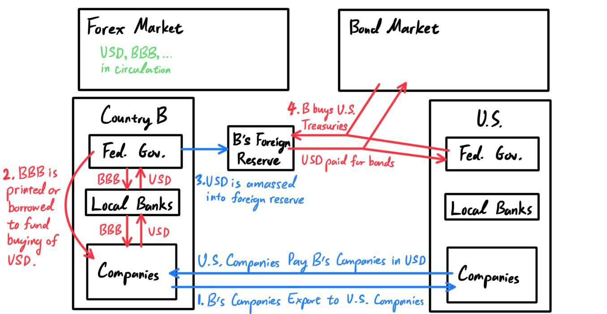 If BBB/USD falls below the peg, then B must raise its value and/or lower the dollar's value. It does this by selling Treasuries on the secondary market and receiving USD to purchase its currency from the forex market. The reduced supply of BBB in the forex market raises its value. Furthermore, the selling of treasuries in the bond market adds to its supply, resulting in a drop in value of the bond along with the value of the dollar. 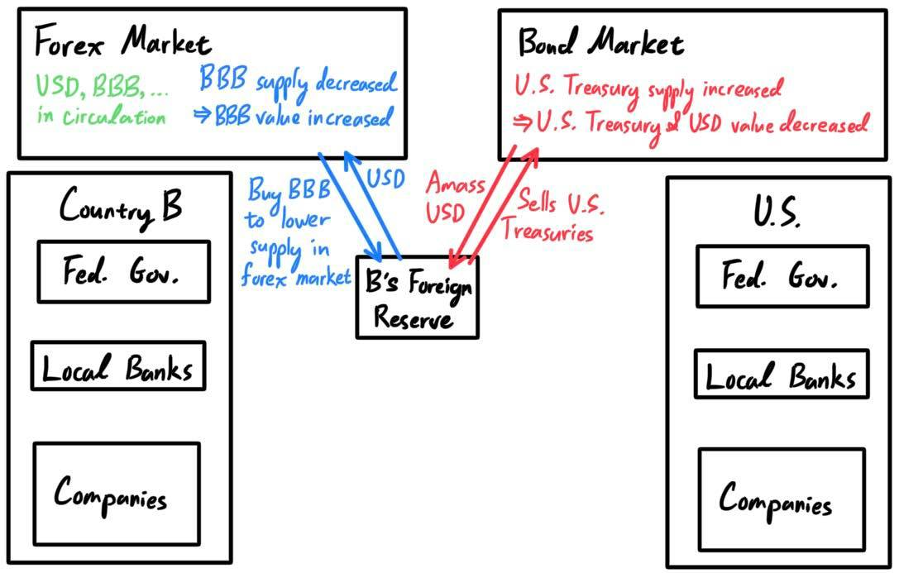
- One example is China, which prefers to keep its currency low to make its exports more competitive. It does it like this: China's currency power comes from its exports to America. Chinese companies receive USD as payment for their exports, which they deposit into their banks in excahnge for Yuan to pay their workers. Local Chinese banks transfer dollars to China's central bank, which stockpiles them in its foreign currency reserves. The Chinese central bank holdings reduce the supply of dollars available for trade, putting upward pressure on the dollar. This will further strengthen the dollar and lower the Yuan's value.
Global Industry Classifiction System
[Hide]
The following is the Global Industry Classification Standard (GICS), an industry taxonomy developed in 1999 by MSCI and Standard & Poor's for use by the global financial community.
The GICS structure consists of 11 sectors, 24 industry groups, 69 industries and 158 sub-industries into which S&P has categorized all major public companies.
More information about the classification of these companies can be found here.
The market sizes of each sector, industry group, industry, and sub-industry is labeled as the market cap of all companies.
| Sector | Industry Group | Industry | Sub-Industry | Notable Companies |
|---|---|---|---|---|
| Utilities ($1.56T) |
Utilities | Electric Utilities ($864B) | Electric Utilities | Alliant Energy, American Electric Power, Duke Energy |
| Gas Utilities ($55B) | Gas Utilities | Atmos Energy | ||
| Multi-Utilities ($467B) | Multi-Utilities | Ameren Corp, CMS Energy, DTE Energy, Exelon, Sempra Energy, Xcel Energy | ||
| Water Utilities ($68B) | Water Utilities | American Water Works | ||
| Indep. Power & Renewable Electricity ($107B) | Indep. Power Producers | AES Corp, NRG Energy | ||
| Renewable Electricity | ||||
| Communication Services ($6.70T) |
Telecommunication Services | Diversified Telecommunication ($1.05T) | Alternative Carriers | Lumem Technologies |
| Integrated Telecommunication Services | AT&T, Verizon | |||
| Wireless Telecommunication Services ($345B) | Wireless Telecommunication Services | T-Mobile US | ||
| Media & Entertainment | Media ($765B) | Advertising | Interpublic Group, Omnicom Group | |
| Broadcasting | Discovery | |||
| Cable & Satellite | Charter Communications, Comcast, Dish Network | |||
| Publishing | News Corp | |||
| Entertainment ($1.30T) | Movies & Entertainment | Fox Corp, Live Nation Entertainment, Netflix, Disney | ||
| Interactive Home Entertainment | Activision Blizzard, Electronic Arts | |||
| Interactive Media & Services ($3.24T) | Interactive Media & Services | Alphabet, Facebook, Match Group, Twitter | ||
| Energy ($2.83T) |
Energy | Energy Equipment & Services ($164B) | Oil & Gas Drilling | |
| Oil & Gas Equipment & Services | Baker Hughes, Schlumberger, Halliburton | |||
| Oil, Gas & Consumable Fuels ($2.66T) | Integrated Oil & Gas | Chevron Corporation, ExxonMobil, Hess Corporation | ||
| Oil & Gas Exploration & Production | APA Corportation, ConocoPhillips, Devon Energy, Marathon Poil | |||
| Oil & Gas Refining & Marketing | Marathon Petroleum, Phillips 66, Valero Energy | |||
| Oil & Gas Storage & Transportation | Kinder Morgan, Oneok, Williams Companies | |||
| Coal & Consumable Fuels | ||||
| Materials (2.51T) | Materials | Chemicals ($1.08T) | Commodity Chemicals | Dow |
| Diversified Chemicals | Eastman Chemical | |||
| Fertilizers & Agricultural Chemicals | CF Industries, Corteva, FMC Corporation, The Mosaic Company | |||
| Industrial Gases | Air Products & Chemicals, Linde | |||
| Specialty Chemicals | Albemarle Corp, Celanese, DuPont, Ecolab, LyondellBasell, PPG Industries | |||
| Construction Materials ($123B) | Construction Materials | Martin Marietta Materials, Vulcan Materials | ||
| Containers & Packaging ($201B) | Metal & Glass Containers | Ball Corp | ||
| Paper Packaging | Amcor, Avery Dennison, International Paper, Packaging Corp of America | |||
| Metals & Mining ($1.05T) | Aluminum | |||
| Diversified Metals & Mining | ||||
| Copper | ||||
| Gold | ||||
| Precious Metals & Minerals | ||||
| Silver | ||||
| Steel | ||||
| Paper & Forest Products ($66B) | Forest Products | |||
| Paper Products | ||||
| Industrials ($5.72T) |
Capital Goods | Aerospace & Defense ($726B) | Aerospace & Defense | Boeing, General Dynamics, Lockheed Martin |
| Building Products ($291B) | Building Products | Allegion, Carrier Global, Johnson Controls | ||
| Costruction & Engineering ($109B) | Costruction & Engineering | Jacobs Engineering Group, Quanta Services | ||
| Electrical Equipment ($459B) | Electrical Components & Equipment | Ametek, Eaton Corporation, Rockwell Automaton | ||
| Heavy Electrical Equipment | ||||
| Industrial Conglomerates ($681B) | Industrial Conglomerates | 3M, General Electric, Honeywell, Roper Technologies | ||
| Machinery ($1.07T) | Construction Machinery & Heavy Trucks | Caterpillar, Paccar, Wabtec | ||
| Agricultural Farm Machinery | Deere & Co., ADM | |||
| Industrial Machinery | Cummins, Cover Corporation, IDEX Corp, Otis Worldwise, Pentair | |||
| Trading Companies & Distributors ($238B) | Trading Companies & Distributors | United Rentals | ||
| Commercial & Professional Services | Commercial Services & Supplies ($351B) | Commercial Printing | ||
| Enviromental & Facilities Services | Republic Services, Rollins, Waste Management | |||
| Office Services & Supplies | ||||
| Diversified Support Services | Cintas Corp, Copart, Leidos | |||
| Security & Alarm Services | ||||
| Professional Services ($495B) | Human Resource & Employment Services | Robert Half International | ||
| Research & Consulting Services | Equifax, IHS Markit, Nielsen Holdings, Verisk Analytics | |||
| Transportation | Air Freight & Logistics ($297B) | Air Freight & Logistics | C. H. Robinson, Expeditors, FedEx, United Parcel Service | |
| Airlines ($193B) | Airlines | Alaska Air, Delta Air, American Air, Southwest Air, United Air | ||
| Marine ($31B) | Marine | |||
| Road & Rail ($758B) | Railroads | CSX, Kansas City Southern, Union Pacific | ||
| Trucking | J. B. Hunt, Old Dominion Freight Line | |||
| Transportation Infrastructure ($21B) | Airport Services | |||
| Highways & Railtracks | ||||
| Marine Ports & Services | ||||
| Consumer Discretionary ($8.82T) |
Automobiles & Components | Auto Components ($200B) | Auto Parts & Equipment | Aptiv, BorgWarner |
| Tires & Rubber | ||||
| Automobiles ($1.76T) | Automobile Manufacturers | Ford, General Motors, Tesla | ||
| Motorcycle Manufacturers | ||||
| Consumer Durables & Apparel | Household Durables ($434B) | Consumer Electronics | Garmin | |
| Home Furnishings | Leggett & Platt, Mohawk Industries | |||
| Homebuilding | D. R. Horton, Lennar, NVR, PulteGroup | |||
| Household Appliances | Whirlpool Corp, Clorox, Colgate-Palmolive | |||
| Housewares & Specialties | Newell Brands | |||
| Liesure Products ($105B) | Liesure Products | Hasbro | ||
| Textiles, Apparel & Luxury Goods ($808B) | Apparel, Accessories & Luxury Goods | Hanesbrands, Nike, PVH, Ralph Lauren, Tapestry, Under Armour | ||
| Footwear | ||||
| Textiles | ||||
| Consumer Services | Hotels, Restaurants & Leisure ($1.26T) | Casinos & Gaming | Caesars Entertainment, Las Vegas Sands, MBM Resorts International | |
| Hotels, Resorts & Cruise Lines | Carnival Corp, Marriott International, Royal Carribean Group | |||
| Leisure Facilities | ||||
| Restaurants | Chipotle, Darden Cominos, McDonalds, Starbucks, Yum! Brands | |||
| Diversified Consumer Services (108B) | Education Services | |||
| Specialized Consumer Services | ||||
| Retailing | Distributors ($54B) | Distributors | LKQ Corporation, Pool Corporation | |
| Internet & Direct Marketing Retail ($2.78T) | Internet & Direct Marketing Retail | Amazon, Booking Holdings, eBay, Etsy, Expedia Group | ||
| Multiline Retail ($238B) | Department Stores | |||
| General Merchandise Stores | Dollar General, Dollar Tree, Target Corp | |||
| Specialty Retail ($1.09T) | Apparel Retail | Gap, Ross, Stores, TJX Companies | ||
| Computer & Electronics Retail | Best Buy | |||
| Home Improvement Retail | Home Depot, Lowe's | |||
| Specialty Stores | AutoZone, Bath & Body Works, CarMax | |||
| Automotive Retail | Advance Auto Parts | |||
| Homefurnishing Retail | ||||
| Consumer Staples ($4.41T) |
Food & Staples Retailing | Food & Staples Retailing ($961B) | Drug Retail | Walgreens Boots Alliance |
| Food Distributors | Sysco | |||
| Food Retail | Kroger | |||
| Hypermarkets & Super Centers | Costco, Walmart | |||
| Food, Beverage & Tobacco | Beverages ($1.15T) | Brewers | Molson Coors Beverage Company | |
| Distillers & Vintners | Brown-Forman, Constellation Brands | |||
| Soft Drinks | Coca-Cola Company, Monster Beverage, PepsiCo | |||
| Food Products ($923B) | Agricultural Products | ADM | ||
| Packaged Foods & Meats | Campbell Soup, Hershey, Kelloggs, Kraft Heinz, Tyson Foods | |||
| Tobacco ($345B) | Tobacco | Altria Group, Philip Morris International | ||
| Household & Personal Products | Household Products ($923B) | Household Products | Church & Dwight, Clorox, Colgate-Palmolive, Kimberly-Clark | |
| Personal Products ($534B) | Personal Products | Estee Lauder Companies, Procter & Gamble | ||
| Health Care ($8.08T) |
Health Care Equipment & Services | Health Care Equipment & Supplies ($1.76B) | Health Care Equipment | Abbott Labratories, Abiomed, Baxter International, Zimmer Biomet |
| Healthcare Supplies | Align Technology, The Cooper Companies | |||
| Health Care Providers & Services ($1.76T) | Healthcare Distributors | AmerisourceBergen, Cardinal Health, McKesson Corporation | ||
| Healthcare Services | CVS Health, LabCorp, Quest Diagnostics | |||
| Healthcare Facilities | DaVita, HCA Healthcare, Universal Health Services | |||
| Managed Healthcare | Anthem, Cigna, Humana, UnitedHealth Group | |||
| Healthcare Technology ($177B) | Healthcare Technology | Cerner | ||
| Pharmaceuticals, Biotechnology & Life Sciences | Biotechnology ($1.53T) | Biotechnology | Amgen, Biogen, Gilead Sciences, Incyte, Moderna | |
| Pharmaceuticals ($2.72) | Pharmaceuticals | AbbVie, Catalent, J&J, Merck & Co. Pfizer, Viatris, Zoetis | ||
| Life Sciences Tools & Services ($697B) | Life Sciences Tools & Services | Bio-Rad Labfratories, Illumina, IQVIA, Mettler Toledo | ||
| Financials ($8.79T) |
Banks | Banks ($4.00T) | Diversified Banks | BOA, Citigroup, Comerica, JPMorgan Chase, US Bancorp, Wells Fargo |
| Regional Banks | Citizens Financial Group, Fifth Third Bancorp, Keycorp, M&T | |||
| Thrifts & Mortgage Finance ($99B) | Thrifts & Mortgage Finance | People's United Financial | ||
| Diversified Financials | Diversified Financial Services ($685B) | Other Diversified Financial Services | ||
| Multi-Sector Holdings | Berkshire Hathaway | |||
| Specialized Finance | ||||
| Consumer Finance ($428B) | Consumer Finance | American Express, Capital One, Discover Financial, Synchrony | ||
| Capital Markets ($1.99T) | Asset Management & Custody Banks | Ameriprise, BlackRock, BNY Mellon, Franklin Resources, Invesco, Northern Trust, State Street, T. Rowe Price | ||
| Investment Banking & Brokerage | Charles Schwab Corp,Goldman Sachs, Morgan Stanley, Raymond James | |||
| Diversified Capital Markets | ||||
| Financial Exchanges & Data | Cboe Global Markets, CME Group, Moody's Corp, MarketAxess, MSCI, Nasdaq, S&P Global | |||
| Mortgage Real Estate Investment Trusts (REITs) ($74B) | Mortgage REITs | |||
| Insurance | Insurance ($1.51T) | Insurance Brokers | Aon, Arthur J. Gallagher, Brown & Brow, Willis Towers Watson | |
| Life & Health Insurance | Aflac, Globe Life, MetLife, Principal Financial Group, Prudential Financial | |||
| Multi-line Insurance | Assurant, Lincoln National, Loews Corp | |||
| Property & Casualty Insurance | Allstate Corp, American International Group, Cubb, Progressive, The Travelers, Hartford | |||
| Reinsurance | Everest Re | |||
| Real Estate ($1.67T) |
Real Estate | Equity Real Estate Investment Trusts (REITs) ($1.51T) | Diversified REITs | |
| Industrial REITs | Duke Realty Corp, Prologis | |||
| Hotel & Resort REITs | Host Hotels & Resorts | |||
| Office REITs | Alexandria Real Estate Equities, Boston Properties, Cornado Realty Trust | |||
| Health Care REITs | Healthpeak Properties, Ventas, Welltower | |||
| Residential REITs | AvalonBay Communities, Equity Residental Essex Property Trust, UDR | |||
| Retail REITs | Federal Realty Investment Trust, Kimco, Regency Centers, Simon Property Group | |||
| Specialized REITs | American Tower, Equinix, Iron Mountain, Weyerhaeuser | |||
| Real Estate Management & Development ($158B) | Diversified Real Estate Activities | |||
| Real Estate Operating Companies | ||||
| Real Estate Development | ||||
| Real Estate Services | CBRE | |||
| Information Technology ($15.52T) |
Software & Services | IT Services ($3.09T) | IT Consulting & Other Services | Accenture, Cognizant Tech Solutions, DXC Tech, Gartner, IBM |
| Data Processing & Outsourced Services | Automatic Data Processing, Broadridge, Fidelity, Fiserv, Fleetcor, Mastercard, PayPal, Visa, Western Union | |||
| Internet Services & Infrastructure | Akamai Technologies, Verisign | |||
| Software ($5.46T) | Application Software | Adobe, Ansys, Autodesk, Cadence, Ceridian, Citirix Intuit, NortonLifeLock, Oracle, Paycom, PTC, Salesforce, Synopsys | ||
| Systems Software | Fortinet, Microsoft, ServiceNow | |||
| Technology Hardware & Equipment | Communications Equipment ($461B) | Communications Equipment | Arista Networks, Cisco Systems, F5 Networks, Juniper Networks, Motorola Solutions | |
| Technology Hardware, Storage & Peripherals ($2.66T) | Technology Hardware, Storage & Peripherals | Apple, Hewlett Packard Enterprise, HP, NetApp, Seagate Technology, Western Digital | ||
| Electronic Equipment, Instruments & Components ($480B) | Electronic Equipment & Instruments | Keysight Technologies, Trimble, Zebra Technologies | ||
| Electronic Components | Amphenol, Corning, Enphase Energy | |||
| Electronic Manufacturing Services | IPG Photonics, TE Connectivity | |||
| Technology Distributors | CDW | |||
| Semiconductors & Semiconductor Equipment | Semiconductors & Semiconductor Equipment ($3.37T) | Semiconductor Equipment | Applied Materials, KLA Corp, Lam Research, Teradyne | |
| Semiconductors | Advanced Micro Devices, Analog Devices, Broadcom, Intel, Monolithic Power Systems, Nvidia, NXP, Qorvo, Qualcomm, Texas Instruments |